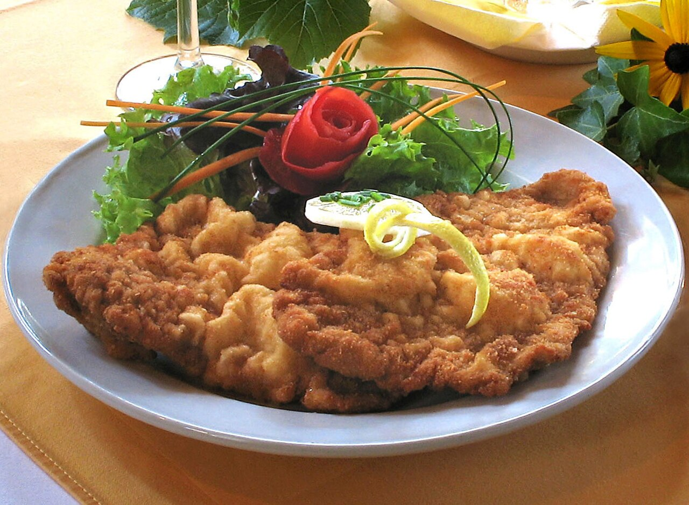

Schnitzel

Description
Wiener schnitzel is an Austrian classic made from a thin, breaded veal cutlet, pounded until
tender and fried in butter or clarified butter until golden and crisp. The breading itself is
part of the appeal: it puffs up slightly during frying, creating a light, airy crust that
contrasts with the tender meat underneath. Traditionally served with
a wedge of lemon, the dish is prized for its simplicity — just meat, breadcrumbs, and hot fat, done exceptionally well.
While veal is the traditional and legally protected choice for a dish
labeled "Wiener Schnitzel" in Austria, pork and chicken versions (often called "Schnitzel Wiener Art," or "Vienna-style schnitzel")
are common and popular elsewhere. It's typically paired with sides like potato salad, parsley potatoes, or a simple green salad,
and sometimes lingonberry jam on the side for a touch of sweetness.
The dish has become a symbol of Austrian and broader Central European cuisine, showing up on menus far beyond Vienna.
Ingredients
- 1 ½ pounds veal cutlets
- ½ cup of all-purpose flour
- 2 large eggs
- 3 tablespoons grated Parmesan cheese
- 2 tablespoons milk
- 1 teaspoon minced parsley
- ½ teaspoon salt
- ¼ teaspoon pepper
- 1 pinch ground nutmeg
- 1 cup dry bread crumbs
- 6 tablespoons butter
- 4 slices lemon
Steps
-
Place veal cutlets between 2 sheets of heavy plastic on a solid, level surface.
Firmly pound cutlets with the smooth side of a meat mallet to a 1/4-inch thickness.
Dip cutlets in flour to coat; shake of excess.
-
Beat eggs, Parmesan cheese, milk, parsley, salt, pepper, and nutmeg together in a shallow bowl
until combined. Place bread crumbs on a plate.
-
Dip each cutlet into the egg mixture, then press in bread crumbs to coat.
Place coated cutlets on a plate and refrigerate for 1 hour to overnight.
-
Melt butter in a larger skillet over medium heat. Cook breaded cutlets in butter
until browned, about 3 minutes per side. Transfer cutlets to a serving platter and
pour pan juices over them. Garnish with lemon slices.
Home